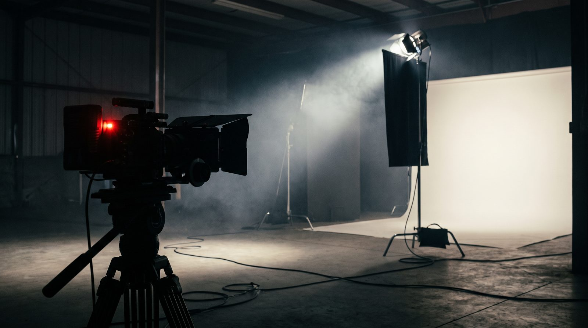

Maç hangi kanalda? Yayıncıyı yanılmadan bulmanın yolu

Süper Lig, millî maç, Avrupa kupaları ve voleybol: her birinin yayıncısı ayrı ve sezon içinde değişebiliyor. Doğru kanalı ve saati üç adımda, kaynağıyla doğrulama rehberi.
Yayın hakkı organizasyona göre değişir
"Maç hangi kanalda" sorusunun tek cevabı yoktur, çünkü yayın hakları organizasyon bazında satılır. Süper Lig'in yayıncısı ile Türkiye Kupası'nın, millî takımın, Şampiyonlar Ligi'nin ve voleybol millî takımının yayıncısı ayrı ayrı belirlenir; aynı hafta sonu üç farklı platformda maç olabilir. Üstelik haklar sezon başında ya da ihaleyle sezon ortasında el değiştirebilir. Bu yüzden geçen sezon ezberlediğiniz kanal bu sezon geçerli olmayabilir.
Üç adımda doğrulama
Birinci adım: organizasyonun kendi sitesi. Türkiye Futbol Federasyonu fikstür sayfasında maç saati ve çoğu zaman yayıncı bilgisi yer alır; UEFA ve TVF de kendi fikstürlerini yayımlar. İkinci adım: yayıncının kendi yayın akışı. Kanalın internet sitesindeki "yayın akışı" sayfası o günün programını saatiyle gösterir; haberdeki bilgiyle çelişiyorsa yayıncı esas alınır. Üçüncü adım: tarih. Haberdeki "hangi kanalda" bilgisi haberin tarihine aittir; ertelenen ya da saati değişen maçlar için en güncel duyuruya bakın.
Şifreli mi, şifresiz mi
Bir maçın şifresiz yayınlanıp yayınlanmayacağı da organizasyona bağlıdır. Millî takım maçları çoğu zaman ulusal bir kanalda şifresiz verilir; lig maçları ise genellikle abonelik isteyen platformlardadır. "Şifresiz mi" sorusunun cevabı da yayıncının duyurusundadır; tahmin yazmayız. Yasal olmayan yayın adresleri için arama yapanlar için not: bu sayfalar hem güvenlik riski taşır hem de yayın kesilir; biz yalnızca resmî yayıncıyı yazarız.
Yurt dışından izlerken
Yayın hakları ülke bazında satılır. Türkiye'deki yayıncının internet yayını çoğunlukla yalnız Türkiye'den izlenebilir; yurt dışındaysanız o ülkedeki hak sahibine bakmanız gerekir. Avrupa kupaları için organizasyonun kendi sitesi ülke ülke yayıncı listesi yayımlar. Millî takım maçlarında da durum aynıdır: aynı maç Türkiye'de bir kanalda, Almanya'da başka bir kanalda verilir. Yurt dışında yaşayan okurlarımızın en sık yaptığı hata, Türkiye'deki kanalın adını arayıp bulunduğu ülkede yayın aramasıdır.
Saat karışıklığı
Avrupa kupası maçlarının saati organizasyonun sitesinde çoğu zaman bulunduğunuz yerin saatine göre gösterilir; Türk basınında ise Türkiye saati (TSİ) yazılır. Kış aylarında Avrupa'nın büyük bölümü saatini geri alırken Türkiye almadığı için aynı maçın Türkiye saati yaz ve kış arasında bir saat kayar. Maç saatini bir haberden okuduysanız haberin TSİ yazıp yazmadığına bakın.
Bu sitede maç yazıları nasıl çıkar
Spor bölümünde derbi, millî maç ve büyük Avrupa maçları için ayrı yazı çıkar: maçın tarihi, saati ve yayıncısı, federasyonun ve yayıncının duyurusuna dayanarak yazılır; iki kaynak çelişiyorsa ikisi de adıyla belirtilir. Skor tahmini, yorum ve bahis içeriği yoktur. Maç günü yaklaşan büyük karşılaşmalar ana sayfadaki takvim kutusunda görünür. Yanlış bir yayıncı bilgisi görürseniz iletişim sayfasından yazın; düzeltir, düzelttiğimizi sayfada not ederiz.
Sık sorulanlar
Millî maç hangi kanalda?
Organizasyona göre değişir; TFF'nin fikstür sayfası ve yayıncının yayın akışı kesin kaynaktır. Günün maçları Spor Ekranı sayfasında kaynağıyla listelenir.
Derbi saat kaçta?
Saat TFF fikstüründe yazar; hava, güvenlik ya da yayın nedeniyle değişebilir, maç günü tekrar bakın.
Kanal bilgisi neden haberden habere farklı?
Haberler farklı tarihlerde yazılmıştır; en güncel tarihli duyuru ve yayıncının kendi sayfası esastır.
Maç ertelenirse nereden öğrenirim?
Federasyonun duyurusu ve kulübün resmî hesabı ilk kaynaktır; yayıncı yayın akışını buna göre günceller.
Yurt dışında Türk maçları nasıl izlenir?
Bulunduğunuz ülkedeki yayın hakkı sahibinden; organizasyonların sitelerinde ülke bazında yayıncı listesi bulunur.
Kaynaklar
- Türkiye Futbol Federasyonu
- Türkiye Voleybol Federasyonu
- UEFA
Tarih ve kural bilgisi yalnızca kurumun kendi yayınına dayanır; bir kural değiştiğinde yazı güncellenir ve güncelleme tarihi değişir.